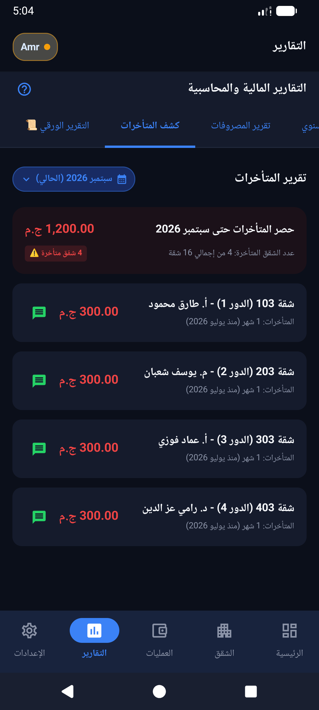

إدارة حسابات العمارة بدون إحراج، وبدون سهر على الدفاتر الورقية
أنت تتطوع بوقتك ومجهودك لخدمة جيرانك والحفاظ على عقاركم، ولا تستحق أن تواجه شكوكاً أو تضيّع ساعات في البحث عن ورقة إيصال مفقودة. صُمم صندوق العمارة ليجعل عملك احترافياً، موثقاً، وسهلاً للغاية.
أكبر 4 تحديات يحلها التطبيق لأمين الصندوق:
1. منع الإحراج مع السكان المتأخرين
عندما يسدد الساكن، تشارك معه كارت إيصال موثقاً على واتساب بضغطة زر. يوضح الإيصال التاريخ، الشهر المغطى، والمتبقي عليه، فلا مجال لقول "أنا دفعت وأنت نسيت تسجل".
2. ضبط عهدة البواب والمشتريات الصغيرة
سلّم البواب مبلغاً نقدياً وسجله كـ "عهدة". ومع كل فاتورة صيانة أو أدوات نظافة يشتريها، تسجل الفاتورة وتخصم من رصيد عهدته تلقائياً ليظهر المتبقي معه في أي لحظة.
3. كشوفات المتأخرات الفورية للاجتماعات
قبل أي اجتماع جمعية عمومية لاتحاد الشاغلين، لا تحتاج لساعات لتجميع الحسابات؛ بنقرة واحدة تستخرج كشف المتأخرات التراكمي وتشاركه كـ PDF أو Excel واضح لا يقبل التشكيك.
4. إدارة مشاريع الصيانة وسلفة الصندوق
إذا احتاج المصعد لعمرة طارئة، أنشئ صندوقاً مستقلاً للمشروع، وحدد نصيب كل شقة مع إمكانية استثناء الأرضي، واستخدم ميزة "سلفة الصندوق" لتغطية أي عجز مؤقت وتتبع سدادها بدقة.
شفافية تحميك وتريح السكان
دفتر اليومية الإلكتروني يحصر كل حركة دخول وخروج للأموال مع أسماء الشقق والتاريخ والتصنيف، مما يجعل حسابك المالي مغلقاً وموثقاً أمام جميع الملاك دون أدنى مجال للخطأ البشري.
استعرض نظام التقارير بالتفصيل ➔